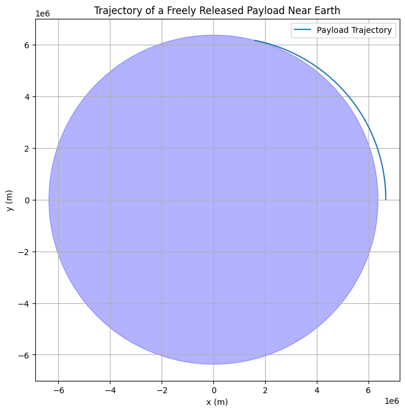

Problem 3
🛰️ Trajectories of a Freely Released Payload Near Earth
📌 Motivation When a payload is released from a rocket near Earth, its path depends on its initial velocity and position, and the only acting force is typically Earth's gravity. Understanding these trajectories is essential for:
1-Orbital insertion,
2-Re-entry capsules,
3-Space debris tracking,
4-Interplanetary mission planning.
🎯 Objective
Identify types of trajectories: elliptical, parabolic, hyperbolic, sub-orbital. Simulate motion based on initial velocity and altitude. Classify outcomes (orbit, escape, re-entry). Visualize trajectories using Python.
🧠 Physics and Equations
1️⃣ Newton's Law of Universal Gravitation
The gravitational force acting on the payload: $$ F = G \cdot \frac{M \cdot m}{r^2} $$ Where: $$ G = 6.674 \times 10^{-11} \ \text{Nm}^2/\text{kg}^2 $$
M: Mass of Earth m: Mass of payload r: Distance from Earth's center
2️⃣ Total Mechanical Energy
Total specific mechanical energy (per unit mass): $$ \epsilon = \frac{v^2}{2} - \frac{G M}{r} $$
Where:
v: Speed of the payload
r: Distance from Earth's center
| Speed (v) [m/s] | Trajectory Type | Energy (ε) |
|---|---|---|
| < 7500 | Elliptical orbit (ε < 0) | Energy is negative (sub-orbital motion) |
| ~7500 - 7900 | Elliptical orbit (ε < 0) | Energy is negative (sub-orbital motion) |
| 11180 | Parabolic escape (ε = 0) | Energy is zero (just escaping the planet) |
| > 11200 | Hyperbolic escape (ε > 0) | Energy is positive (escaping with excess energy) |
3️⃣ Orbital Velocities
First Cosmic Velocity: $$ v_1 = \sqrt{\frac{G M}{R}} $$
Second Cosmic Velocity (escape velocity): $$ v_2 = \sqrt{2} \cdot v_1 = \sqrt{\frac{2 G M}{R}} $$ General Specific Energy: $$ \epsilon = \frac{v^2}{2} - \frac{G M}{r} $$
Python Simulation Code
import numpy as np
import matplotlib.pyplot as plt
import numpy as np
import matplotlib.pyplot as plt
# Constants
G = 6.67430e-11 # Gravitational constant (m^3/kg/s^2)
M = 5.972e24 # Mass of Earth (kg)
R_earth = 6.371e6 # Earth radius (m)
# Simulation parameters
dt = 1 # Time step (seconds)
t_max = 10000 # Max time (seconds)
# Initial conditions
r0 = np.array([R_earth + 300e3, 0]) # 300 km altitude
v0 = np.array([0, 7500]) # Initial velocity
def acceleration(r):
norm_r = np.linalg.norm(r)
return -G * M * r / norm_r**3
def simulate(r0, v0):
r = r0.copy()
v = v0.copy()
trajectory = []
for _ in range(int(t_max / dt)):
# Calculate acceleration due to gravity
a = acceleration(r)
# Update velocity
v = v + a * dt
# Update position
r = r + v * dt
# Save the current position in the trajectory
trajectory.append(r.copy())
# Check if the object has crashed into Earth
if np.linalg.norm(r) <= R_earth:
break
return np.array(trajectory)
# Run simulation
trajectory = simulate(r0, v0)
# Plot
plt.figure(figsize=(8, 8))
plt.plot(trajectory[:, 0], trajectory[:, 1], label="Payload Trajectory")
# Plot Earth as a circle
earth = plt.Circle((0, 0), R_earth, color='blue', alpha=0.3)
plt.gca().add_patch(earth)
# Setting plot limits
plt.xlim(-1.5 * R_earth, 1.5 * R_earth)
plt.ylim(-1.5 * R_earth, 1.5 * R_earth)
# Labels and title
plt.axis('equal')
plt.grid(True)
plt.title("Trajectory of a Freely Released Payload Near Earth")
plt.xlabel("x (m)")
plt.ylabel("y (m)")
plt.legend()
plt.show()
| Initial Velocity (m/s) | Outcome | Energy (ε) |
|---|---|---|
| < 7500 | Sub-orbital (falls) | ε < 0 |
| ~7500 - 7900 | Elliptical orbit | ε < 0 |
| 11180 | Escape (parabolic) | ε = 0 |
| > 11200 | Hyperbolic escape | ε > 0 |
🚀 Real-World Applications
Satellite deployment → adjust v_0 for desired orbit. Controlled re-entry → reduce v_0. Interplanetary probes → increase to escape velocity. Debris tracking → analyze trajectories for safety.
✅ Conclusion
Using \frac{}-based formulas and Newtonian mechanics, we can:
Classify payload motion, Simulate and visualize it, Apply it to real mission scenarios.
